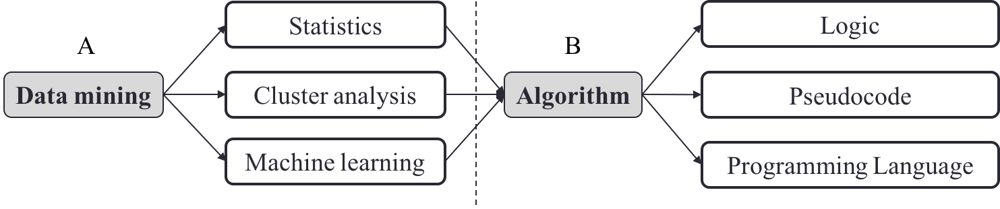
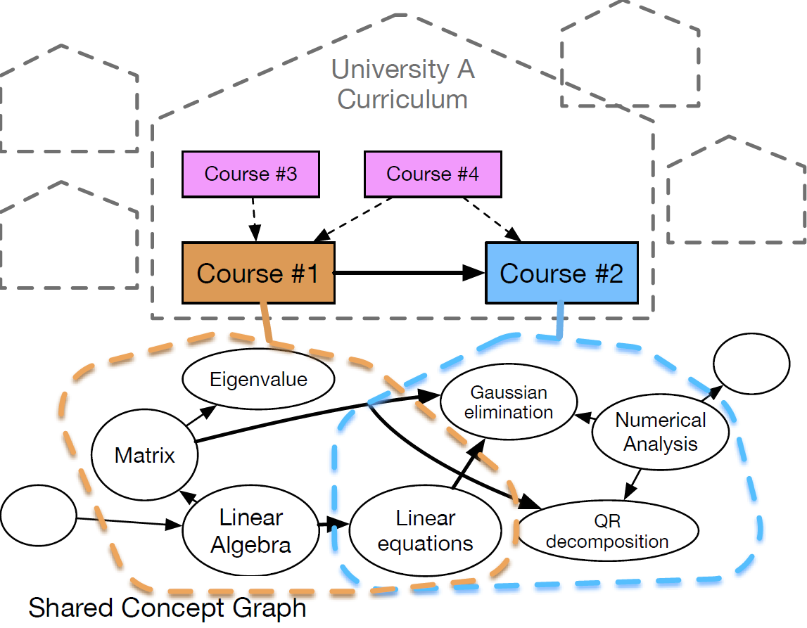
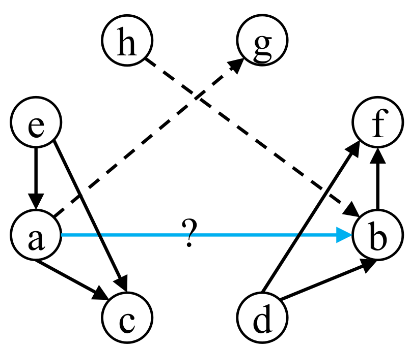

During my Ph.D. study, I develop machine learning methods for building educational applications.
Concept Prerequisite Learning (2015 - 2019)

RefD: an effective link-based feature for measuring concept prerequisites.

Learning from course prerequisites.

Active learning for concept prerequisite learning.
Prerequisite relations describe a fundamental relation among concepts in education and are useful for representing
concept graphs for various knowledge disciplines. My research focuses on developing machine learning methods for
discovering concept prerequisite relations.
Different from existing methods in educational data mining which are largely based on student assessment data, our
approaches make use of various educational data sources such as Wikipedia, textbooks, and course prerequisites.
The goal is to have a scalable learning model for measuring general prerequisite relations among concepts.
Please check out our recent work on active learning for concept prerequisite learning (EAAI'18; CoRR) to
learn more!
Here is a paper list on concept
prerequisite learning, selected from AI/NLP conferences.
Collaborating with the TLT department at Penn State, we apply information
retrieval methods to dynamically generate "zero-cost" materials to support learning.
The end goal is to have a system that can search various OERs, based on a set of user-generated criteria, and
return various resources that can be combined, remixed, and re-used to support specific learning goals. The
current system is designed to search wikipedia, and return results to users based on the search criteria. The more
times users iterate the search (accept or reject results), the better the search becomes.
As of December 2016, BBookX has 416 users, that created 419 books. Over 47000 searches were executed within
BBookX, resulting in 1086 book chapters.
Please check out this link to learn more.
Media Coverage:Tech
Times,
Tech
Republic,
Philadelphia
Inquirer,
Campus
Technology,
Center
for Digital Education,
Education
World,
Penn
State News,
The
Daily Collegian,
T.H.E.
Journal,
EdSurge,
etc.
Presentations:
CLIEDE 2017, Sep 2017, University Park, PA, USA
WWW 2016, April 2016, Montreal, Canada
AAAI 2016, Feb 2016, Phoenix, AZ, USA
Penn State EdTech Network Summit, Nov 2015, University Park, PA, USA